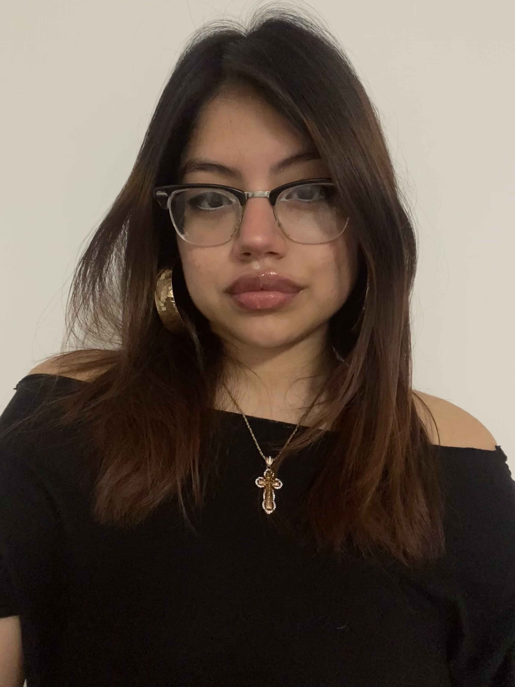

My name is Yasmari Palestino-Ibarra, and I am currently a Media Studies major in Hunter College. In terms of creativity, I have always held a passionate interest over messy, hands-on mediums that do not require ordered structure, or enforce bounded guidelines. For this reason, I have always preferred to express my thoughts, emotions, and ideas through painting (with watercolor and/or acrylic), junk-journaling, digital collaging, and free-write poetry. These arts provide me with the necessary imaginative freedom to hone in on a specific moment and create something real, personal, and meaningful.
Using my skills and experiences with these mediums, I want my work to center around creating designs that highlight the overwhelming emotions and injustices that fuel modern-day events and discourse. This means that I would combine pop-culture imagery, political/social conflicts, intricate color choices, and curated phrases to recount, share, and accentuate stories that cannot remain silent. My inspirations come from two distinct areas: the first being powerful abstract pieces that capture select feelings that plague the artist and force the public to stop and absorb it, and the second being social media posts, signage, and posters meant for protest or public reform. I want to explore the themes of individuality, society, and how we can use human connection to bridge them together. Whether it be through sharing grief, or speaking out against major issues like ICE, this type of media incites action and raises awareness. I want to be part of it.